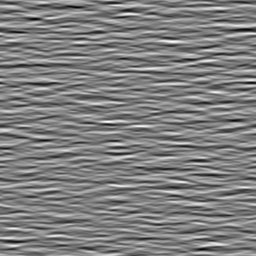

2020-01-08 changing the global phase of a Motion Cloud
Motion Clouds were defined in the origin to define parameterized moving textures. In that other post, we defined a simple code to generate static images using a simple code. Can we generate a series of images while chanigning the phase globally?

There are multiple solutions, and the simplest is perhaps to generate a movie that does not move. This means that the mean velocity $(V_X, V_Y)$ is null $=(0, 0)$ but also that there is no noise in the definition of the speed plane. This is defined by $B_V=0$, that is, that all the energy is concentrated on the spped plane:
import MotionClouds as mc
mc.N_frame, seed = 1, 42
fx, fy, ft = mc.get_grids(mc.N_X, mc.N_Y, mc.N_frame)
name = 'phase'
env = mc.envelope_gabor(fx, fy, ft, V_X=0., V_Y=0., B_V=0)
z = mc.rectif(mc.random_cloud(env, seed=seed))
print(z.shape)
z = z.reshape((mc.N_X, mc.N_Y))
import matplotlib.pyplot as plt
%matplotlib inline
fig, ax = plt.subplots(figsize=(10,10))
_ = ax.imshow(z.T, cmap=plt.gray())
The function generating the texture takes an envelope and multiplies it with a random phase matrix to generate the image:
help(mc.random_cloud)
To globally change the phase of the gabors in the texture, a "trick" is to multiply this envelope by a rotation in the complew plane (that is, by multiplying by $\exp(i\cdot\phi)$), globally on all points of the Fourier space, and keep the same seed:
N_phase = 4
fig_width = 21
import numpy as np
fig, axs = plt.subplots(1, N_phase, figsize=(fig_width, fig_width/N_phase))
for i_ax, phase in enumerate(np.linspace(0, 2*np.pi, N_phase, endpoint=False)):
im = mc.rectif(mc.random_cloud(env*np.exp(1j * phase), seed=seed))
axs[i_ax].imshow(im[:, :, 0], cmap=plt.gray())
axs[i_ax].text(5, 29, r'$\phi=%.1f$°' % (phase*180/np.pi), color='white', fontsize=32)
axs[i_ax].set_xticks([])
axs[i_ax].set_yticks([])
#plt.tight_layout()
fig.subplots_adjust(hspace = .0, wspace = .0, left=0.0, bottom=0., right=1., top=1.)
#import os
#fig.savefig(os.path.join('../figs', 'orientation_tuning.png'))
now trying to generate an animation:
import imageio
from pygifsicle import optimize
N_phase = 32
fig_width = 12
fps, dpi = 8, (128, 128)
fig, ax = plt.subplots(1, 1, figsize=(fig_width, fig_width))
template = "/tmp/MCphase_{}.png"
for i_phase, phase in enumerate(np.linspace(0, 2*np.pi, N_phase, endpoint=False)):
im = (mc.rectif(mc.random_cloud(env*np.exp(1j * phase), seed=seed))*255).astype(np.uint8)
imageio.imsave(f"/tmp/MCphase_{i_phase}.png", im, dpi=dpi)
gifname = '../files/2020-01-08-MC_phase.gif'
with imageio.get_writer(gifname, mode='I', fps=fps) as writer:
for i_phase in range(N_phase):
writer.append_data(imageio.imread(f"/tmp/MCphase_{i_phase}.png"))
optimize(str(gifname))
from IPython.display import Image
Image(gifname, width=2000)
some book keeping for the notebook¶
%load_ext watermark
%watermark
%load_ext version_information
%version_information numpy, scipy, matplotlib, sympy, pillow, imageio
%%bash
cd ..
nikola build ; nikola deploy
cd posts
Comments
Comments powered by Disqus